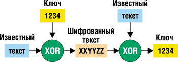
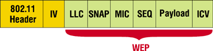

Сергей Монин
инструктор Учебного центра REDCENTER,
sm@redcenter.ru
"…Защита информации и беспроводные сети?
А что, разве это не взаимоисключающие понятия?"
Из разговора на выставке "Связьэкспоком-2004"
Устройства беспроводной связи на базе стандартов 802.11х очень агрессивно продвигаются сегодня на рынке сетевого оборудования. Это и не удивительно: удобство работы для мобильных и квазимобильных пользователей, организация коммерческих и корпоративных хот-спотов, "последняя миля", связь локальных сетей (ЛС) между собой - все это далеко не полный перечень оснований для внедрения таких решений. И действительно, количество всевозможного работающего оборудования стандартов 802.11х в мире впечатляет: по данным компании J'son & Partners, число только хот-спотов в конце 2003 г. превысило 43 тыс., а к концу 2004 г. оно должно достигнуть 140 тыс. Доля России в этих показателях невелика, однако количество сетей беспроводной связи (и хот-спотов в том числе) и у нас неуклонно растет. Заметим также, что в нашей стране более 80% корпоративных сетей беспроводной связи построено на "старейшем" и наиболее часто используемом оборудовании - Cisco Aironet.
Но впечатляют не только цифры; гораздо удивительнее количество заблуждений, связанных с обеспечением безопасной передачи данных в таких сетях. Разброс мнений здесь самый широкий: от полного доверия ко всякому оборудованию и любым его настройкам до нелестных характеристик того рода, что мы привели в качестве эпиграфа.
802.11х - восприимчивость к угрозам извне
Сама суть беспроводной передачи данных таит в себе возможность несанкционированных подключений к точкам доступа, перехвата данных и прочих неприятностей. Отсутствие кабеля, который организационно несложно защитить, вызывает ощущение неприятной открытости и доступности.
Стоит упомянуть о "непротокольных" угрозах - именно они и составляют основу проблемы. При разработке беспроводной корпоративной сети администраторы в первую очередь заботятся о качественном покрытии территории офиса. Очень часто никто просто не берет в расчет, что коварные хакеры могут подключиться к сети прямо из автомобиля, припаркованного на улице. Кроме того, бывают ситуации, когда в принципе нельзя ликвидировать саму возможность "слышать" передаваемый трафик. Пример - внешние антенны. Кстати, в странах СНГ соединение ЛС офисов между собой с помощью "беспроводки" - весьма популярное решение.
Не менее опасная угроза - возможность хищения оборудования. Если политика безопасности беспроводной сети построена на МАС-адресах, то любой компонент (сетевая карта, точка доступа), украденный злоумышленником, моментально делает эту сеть открытой.
И, наконец, проблема "слишком умных" пользователей. Часто несанкционированное подключение точек доступа к ЛС - дело рук самих сотрудников организации. Причем делается это исключительно для удобства работы, иногда даже с благими намерениями. Конечно же, защиту информации при подключении к сети таких устройств эти сотрудники обеспечивают тоже самостоятельно и не всегда представляют себе последствия такой "самозащиты".
Решением этих и подобных проблем нужно заниматься комплексно. Заметим сразу, что организационные мероприятия в рамках данной статьи не рассматриваются, - они чаще всего выбираются на основании условий работы каждой конкретной сети. Что касается мероприятий технического свойства, то весьма хороший результат дают обязательная взаимная аутентификация устройств и внедрение активных (например, Observer 8.3, Airopeek NX 2.01, Wireless Sniffer 4.75) и пассивных (таких, как APTools 0.1.0, xprobe 0.0.2) средств контроля.
Уязвимость "старых" методов защиты
Защитой данных в беспроводных сетях комитет IEEE 802.11 занимался всегда. К сожалению, методы обеспечения безопасности сетей 802.11х на этапе их начального развития (1997-1998 гг.) использовались, мягко говоря, неудачные. Они включали шифрование по протоколу WEP (Wired Equivalent Privacy) и аутентификацию: на основании МАС-адреса, открытую (Open) и по разделяемому ключу (PreShared Key).
Рассмотрим перечисленные методы по порядку. Классический протокол шифрования WEP, разработанный компанией RSA Data Security, использует 40-разрядный ключ, который складывается со сгенерированным вектором инициализации (IV, его длина 24 бит). С помощью полученного ключа по алгоритму RC4 шифруются пользовательские данные и контрольная сумма. Вектор IV передается в открытом виде.
Первый минус этого способа - 40-разрядного ключа недостаточно для спокойствия. Даже DES с его 56-разрядным ключом давно признан ненадежным. Второй минус - неизменяемость ключа; применение статичного ключа упрощает проблему взлома. Раз уж 40-разрядный ключ ненадежен, хотелось бы его менять почаще. И, наконец, сам подход к шифрованию весьма сомнителен. Размер IV - 24 бит, значит, он повторится не позднее чем через 5 ч (длина пакета 1500 байт, скорость 11 Мбит/с).
Никита Борисов, Йэн Голдберг и Дэвид Вагнер первыми изучили эту проблему, и уже в 2001 г. появились первые реализации драйверов и программ, позволяющих справиться с шифрованием WEP. Документ, описывающий эту уязвимость, опубликован по адресу: http://www.isaac.cs.berkeley.edu/isaac/wep-faq.html.
Способы аутентификации тоже не слишком надежны. Например, ничего не стоит "подслушать" всю процедуру аутентификации по МАС-адресу - ведь МАС-адреса в кадре передаются незашифрованными. Если злоумышленник знает о принятом способе аутентификации - он уже практически готов войти в сеть. Самый надежный из перечисленных способов - PreShared Key, но и он хорош только при надежном шифровании и регулярной замене качественных паролей.
Распространено заблуждение, что применение уникального Service Set ID (SSID) позволяет избежать несанкционированных подключений. Увы, SSID пригоден лишь для логического разбиения сетевых устройств на группы - не более того. Единственное, что можно сделать с помощью SSID, - это смутить юного хакера использованием "непечатных" символов. Точки доступа (Access Point, AP), например, от Cisco Systems позволяют сделать это (можно указывать символы, входящие в SSID в шестнадцатеричном виде, - \xbd\xba).
Таким образом, если еще учесть массу "любознательных" подростков с ноутбуками, в сети беспроводной связи неизбежно встает проблема защиты от почти гарантированных WEP-атак.
WEP-атаки
Недостаточность длины ключа, отсутствие его ротаций и сам принцип шифрования RC4, описанный выше, позволяют организовать весьма эффективную пассивную атаку. Причем злоумышленнику не нужно совершать никаких действий, по которым его можно было бы обнаружить, достаточно просто слушать канал. При этом не требуется и специального оборудования - хватит обычной WLAN-карточки, купленной долларов за 20-25, а также программы, которая будет накапливать пакеты на жестком диске до совпадения значений вектора IV. Когда количество пакетов станет достаточным (чаще всего от 1 млн до 4 млн), легко вычислить WEP-ключ. Одна из самых популярных программ для таких "упражнений" - AirSnort (http://airsnort.shmoo.com). Это ПО работает с сетевыми картами от Cisco Systems, карточками на базе НМС Prism-2 (их довольно много), а также на картах Orinoco или их клонах.
Неплохих результатов может достичь хакер, использующий активные способы атаки. Например, можно посылать известные данные извне ЛС, скажем, из Интернета, одновременно анализируя, как их зашифровала точка доступа. Такой метод позволяет и вычислить ключ, и манипулировать данными.
Еще один метод активной атаки - Bit-Flip attack. Алгоритм действий здесь следующий (рис. 1):
- Перехватываем фрейм, зашифрованный WEP.
- Меняем произвольно несколько битов в поле "данные" и пересчитываем контрольную сумму CRC-32.
- Посылаем модифицированный фрейм на точку доступа.
- Точка доступа примет фрейм на канальном уровне, поскольку контрольная сумма верна.
- Точка доступа попытается дешифровать данные и ответит заранее известным текстом, например: "Ваш ключ шифрования неверен".
- Сравнение текста в зашифрованном и незашифрованном виде может позволить вычислить ключ.
|  |
| Рис. 1. Алгоритм анализа зашифрованных данных.
|
В рамках данной статьи мы не будем рассматривать возможную DOS-атаку на оборудование, использующее способ широкополосной модуляции DSSS. К оборудованию этого типа относятся устройства стандарта 802.11b и 802.11a, работающие на низких скоростях.
Промежуточные выводы
Все вышесказанное позволяет говорить о ненадежности старых методов обеспечения безопасности в беспроводных сетях; а если оборудование не позволяет реализовать современные решения для защиты информации, то выбор стратегий невелик: либо использовать строжайшую административную политику (см. врезку "Административные меры"), либо применять технологию IPSec - ESP.
Технология IPSec - ESP, безусловно, позволит защитить данные, но сильно снизит производительность ЛС. Все-таки эта технология была разработана для глобальных сетей, и в пределах беспроводной локальной сети использовать ее расточительно. Ее применение поверх беспроводных каналов оправдано лишь в случае соединения филиалов или других подобных решений.
Административные мерыПолитика администрирования безопасности должна включать:
|
Современные требования к защите, или "Из жизни с Cisco"
Для спокойствия любого пользователя нужно обеспечить решение всего трех проблем для его трафика: это конфиденциальность (данные должны быть надежно зашифрованы), целостность (данные должны быть гарантированно не изменены третьим лицом) и аутентичность (уверенность в том, что данные получены от правильного источника).
Аутентификация
В стандарте 802.1x определен более современный по сравнению со стандартами 1997-1998 гг. способ аутентификации, который широко применяется в различном сетевом оборудовании, в беспроводных устройствах в том числе. Принципиальное отличие его от старых способов аутентификации заключается в следующем: пока не будет проведена взаимная проверка, пользователь не может ни принимать, ни передавать никакие данные. Стандарт предусматривает также динамическое управление ключами шифрования, что, естественно, затрудняет пассивную атаку на WEP.
Например, ряд разработчиков используют для аутентификации в своих устройствах протоколы EAP-TLS и PEAP, но более "широко" к проблеме подходит Cisco Systems (http://www.cisco.com), предлагая для своих беспроводных сетей, наряду с этими, следующий ряд протоколов.
Extensible Authentication Protocol - Transport Layer Security (EAP-TLS) - это стандарт IETF, который обеспечивает аутентичность путем двустороннего обмена цифровыми сертификатами.
Protected EAP (PEAP) - пока предварительный стандарт (draft) IETF. Он предусматривает обмен цифровыми сертификатами и дополнительную проверку имени и пароля по специально созданному шифрованному туннелю.
Lightweight EAP (LEAP) - фирменный протокол Cisco Systems. "Легкий" протокол взаимной аутентификации, похожий на двусторонний Challenge Authentication Protocol (CHAP). Использует разделяемый ключ, поэтому требует определенной разумности при генерации паролей. В противном случае, как и любой другой способ PreShared Key, подвержен атакам по словарю.
EAP - Flexible Authentication via Secure Tunneling (EAP-FAST) - разработан Cisco на основании предварительного стандарта (draft) IETF для защиты от атак по словарю и имеет высокую надежность. Требует от администратора минимума усилий для поддержки. Принцип его работы схож с LEAP, но аутентификация проводится по защищенному туннелю. Первые реализации появились в апреле 2004 г. Поддерживается, начиная с версий ПО IOS 12.2(11)JA, VxWorks 12.01T, Cisco Secure ACS 3.2.3.
Все современные способы аутентификации (см. таблицу) подразумевают поддержку динамических ключей, что не может не радовать. Однако если сравнивать все эти стандарты и по остальным параметрам, то способы EAP-TLS и PEAP кажутся более тяжеловесными. И это действительно так. Они больше подходят для применения в сетях, построенных на базе оборудования различных производителей.
Особенности способов аутентификации
| Показатель | Способ | |||
| LEAP | EAP-FAST | PEAP | EAP-TLS | |
| Поддержка современных ОС | Да | Да | Не все | Не все |
| Сложность ПО и ресурсоемкость аутентификации | Низкая | Низкая | Средняя | Высокая |
| Сложность управления | Низкая* | Низкая | Средняя | Средняя |
| Single Sign on (единый логин в Windows) | Да | Да | Нет | Да |
| Динамические ключи | Да | Да | Да | Да |
| Одноразовые пароли | Нет | Да | Да | Нет |
| Поддержка баз пользователей не в формате Microsoft Windows | Нет | Да | Да | Да |
| Fast Secure Roaming | Да | Да | Нет | Нет |
| Возможность локальной аутентификации | Да | Да | Нет | Нет |
Способы аутентификации, разработанные Cisco, выглядят симпатичнее. Особенную прелесть им придает поддержка технологии Fast Secure Roaming, позволяющей переключаться между различными точками доступа (время переключения примерно 100 мс), что особенно важно при передаче голосового трафика. При работе с EAP-TLS и PEAP повторная аутентификация займет существенно больше времени, и в результате разговор прервется. Главный недостаток LEAP и LEAP-FAST очевиден - эти протоколы поддерживаются только в оборудовании Cisco Systems.
Шифрование и целостность
На основании рекомендаций 802.11i Cisco Systems реализовала протокол TKIP (Temporal Кey Integrity Protocol), который обеспечивает смену ключа шифрования PPK (Рer Рacket Кeying) в каждом пакете и контроль целостности сообщений MIC (Message Integrity Check).
Процедура PPK предусматривает изменение вектора инициализации IV в каждом пакете. Причем шифрование осуществляется значением хэш-функции от IV и самого WEP-ключа. Если еще учесть, что WEP-ключи динамически меняются, то надежность шифрования становится довольно высокой.
Обеспечение целостности возложено на процедуру MIC. В формирующийся фрейм добавляются поля MIC и SEQuence number, в поле SEQ указывается порядковый номер пакета, что позволяет защититься от атак, основанных на повторах и нарушениях очередности. Пакет с неверным порядковым номером просто игнорируется. В 32-разрядном поле MIC располагается значение хэш-функции, вычисленной по значениям самого заголовка пакета 802.11, поля SEQ, пользовательских данных (рис. 2).
|  |
| Рис. 2. Структура пакета 802.11х при использовании TKIP-PPK, MIC и WEP-шифрования.
|
Другой перспективный протокол шифрования и обеспечения целостности, уже зарекомендовавший себя в проводных решениях, - это AES (Advanced Encryption Standard). Он разработан сравнительно недавно - в октябре 2001 г. и обладает лучшей криптостойкостью по сравнению с DES и ГОСТ 28147-89. Длина ключа AES составляет 128, 192 или 256 бит. Как уже отмечалось, он обеспечивает и шифрование, и целостность.
Заметим, что используемый в нем алгоритм (Rijndael) не требует больших ресурсов ни при реализации, ни в работе, что очень важно для уменьшения времени задержки данных и нагрузки на процессор.
AES уже работает в ОС Cisco IOS (k9), начиная с 12.2(13)T. В настоящее время практически все устройства Cisco Systems стандарта 802.11g готовы к поддержке AES. Сетевая общественность находится в ожидании объявления о выходе этого ПО в свет, однако неоднократно называвшиеся сроки не соблюдаются. Впрочем, сейчас определенная ясность все-таки появилась. Компания объявила, что все устройства, работающие в стандарте 802.11g, можно будет совершенно свободно снабдить новым ПО, которое обязательно появится вскоре… Но - только после ратификации стандарта 802.11i. Стандарт ратифицирован IEEE в конце июня (см. врезку "Стандарт 802.11i ратифицирован"). Так что ждем-с.
Wi-Fi Protected Access
Стандарт Wi-Fi Protected Access (WPA) - это набор правил для реализации защиты данных в сетях 802.11х. Начиная с августа 2003 г., соответствие WPA входит в состав требований к оборудованию, сертифицирующемуся на высокое звание Wi-Fi Certified (http://www.wi-fi.org/OpenSection/pdf/Wi-Fi_Protected_Access_Overview.pdf).
Заметим, что в спецификации WPA входит немного измененный протокол TKIP-PPK. Шифрование выполняется на "смеси" нескольких ключей - текущего и последующего. При этом длина IV увеличена до 48 бит.
WPA определяет и контроль целостности сообщений согласно упрощенной версии MIC (Michael MIC), отличающейся от описанной тем, что хэш-функция рассчитывается на основании меньшего количества полей, но само поле MIC имеет большую длину - 64 бит. Это дает возможность реализовать дополнительные меры защиты информации, например, ужесточить требования к ре-ассоциациям, ре-аутентификациям и т. п.
Спецификации предусматривают также поддержку 802.1x/EAP и аутентификации с разделяемым ключом и, несомненно, - управление ключами.
Особенно радует, что WPA-устройства готовы к работе и с клиентами, оборудование у которых поддерживает современные стандарты, и с клиентами, совершенно не заботящимися о своей безопасности и использующими старое оборудование или ПО. Автор категорически рекомендует: распределяйте пользователей с разной степенью защищенности по разным виртуальным ЛС и в соответствии с этим реализуйте свою политику безопасности.
Окончательные выводы и рекомендации
Сегодня, при условии использования современного оборудования и ПО, защищенную и устойчивую к атакам беспроводную сеть на базе стандартов 802.11х построить вполне возможно. Для этого нужно только применить в ней несколько разумных постулатов.
Надо помнить, что почти всегда беспроводная сеть связана с проводной. Кроме необходимости защищать беспроводные каналы, данный факт служит побудительным мотивом к внедрению новых методов защиты и в проводных сетях. В противном случае может сложиться ситуация, когда сеть будет иметь фрагментарную защиту, что по сути создает потенциальную угрозу безопасности.
Желательно использовать оборудование, имеющее сертификат Wi-Fi Certified, выданный позднее августа 2003 г., т. е. подтверждающий соответствие WPA.
Многие администраторы, устанавливая в ЛС устройства, сохраняют настройки производителя по умолчанию. В серьезных беспроводных сетях это категорически недопустимо.
Несомненно, нужно внедрять 802.1х/EAP/TKIP/MIC и динамическое управление ключами. Если сеть смешанная - используйте виртуальные локальные сети. Сейчас практически любой серьезный производитель точек доступа поддерживает данную технологию. А если он ее не поддерживает, то не стоит поддерживать и такого производителя, приобретая его оборудование. В случае использования внешних антенн (например, при соединении разных ЛС между собой) рекомендуется технология виртуальных частных сетей VPN.
Стоит сочетать протокольные и программные способы защиты с административными. Имеет смысл подумать и о внедрении технологии Intrusion Detection System (IDS) для обнаружения возможных вторжений. Можно также использовать описанные выше программные продукты.
И, наконец, самое главное - при планировании защищенной беспроводной сети руководствуйтесь здравым смыслом. Помните: любое шифрование или другие манипуляции с данными неизбежно привносят дополнительную задержку, увеличивают объем служебного трафика и нагрузку на процессоры сетевых устройств. Безусловно, безопасность - важный фактор в современных сетях, но она теряет всякий смысл, если трафик пользователя не получает должной полосы пропускания. Ведь, к сожалению, любые сети создаются в конечном счете для пользователей, а не для администраторов. Впрочем, тема QoS в беспроводных сетях стандарта 802.11х заслуживает отдельной статьи.
Стандарт 802.11i ратифицирован25 июня 2004 г. Институт инженеров по электротехнике и радиоэлектронике (IEEE) ратифицировал давно ожидаемый стандарт обеспечения безопасности в беспроводных локальных сетях - 802.11i. До его принятия, еще в 2002 г., отраслевой консорциум Wi-Fi Alliance предложил использовать в качестве промежуточного варианта протокол WPA. В него вошли некоторые механизмы 802.11i, в том числе шифрование по протоколу TKIP и возможность использования системы аутентификации пользователей 802.1x, базирующейся на протоколе RADIUS. Протокол WPA существует в двух модификациях: облегченной (для домашних пользователей) и включающей в себя стандарт аутентификации 802.1x (для корпоративных пользователей). В официальном стандарте 802.11i к возможностям протокола WPA добавилось требование использовать стандарт шифрования AES, который обеспечивает уровень защиты, соответствующий требованиям класса 140-2 стандарта FIPS (Federal Information Processing Standard), применяемого в правительственных структурах США. Однако во многих существующих сетях протокол AES может потребовать замены оборудования, если оно не оснащено специальными средствами шифрования и дешифрования. Кроме того, новый стандарт приобрел и несколько относительно малоизвестных свойств. Одно из них - key-caching - незаметно для пользователя записывает информацию о нем, позволяя при выходе из зоны действия беспроводной сети и последующем возвращении в нее не вводить всю информацию о себе заново. Второе нововведение - пре-аутентификация. Суть ее в следующем: из точки доступа, к которой в настоящее время подключен пользователь, пакет пре-аутентификации направляется в другую точку доступа, обеспечивая этому пользователю предварительную аутентификацию еще до его регистрации на новой точке и тем самым сокращая время авторизации при перемещении между точками доступа. Wi-Fi Alliance намерен приступить к тестированию устройств на соответствие новому стандарту (его еще называют WPA2) до сентября текущего года. По заявлению его представителей, повсеместной замены оборудования не понадобится. И если устройства с поддержкой WPA1 могут работать там, где не требуется продвинутое шифрование и RADIUS-аутентификация, то продукты стандарта 802.11i можно рассматривать как WPA-оборудование, поддерживающее AES. |